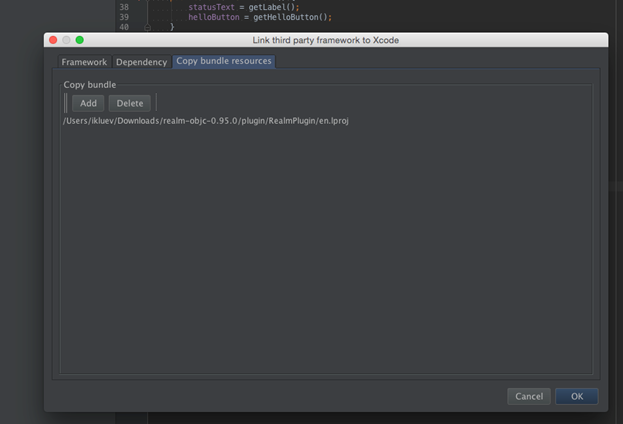

Nat/J Binding Generator¶
One of the useful features of Multi-OS Engine is the generation of Java bindings. NatJGen is a command line tool which implements this feature. NatJGen allows generate Java bindings based on special configuration file. NatJGen tool configuration file is quite complicated so why wrapnatjgen wrapper was created to simply the tool using.
Wrapnatjgen is a wrapper of NatJGen which provides a useful command line interface and avoids the need of writing configuration files with special format. Wrapnatjgen tool helps to generate Java bindings for selected native header files. Tool also allows for frameworks or libraries to create JAR files with precompiled Java bindings, resources (if needed), additional linker flags and frameworks or libraries itself. This approach is very useful because once compiled, such JAR files can be used in different projects on different machines. Build procedure in Android Studio allows to easily link frameworks/libraries contained in JAR to Xcode project and also all the specified resources necessary for the framework of libraries will be copied to the final app file.
Wrapnatjgen may be used as command line tool with appropriate arguments or as a context menu item in Android Studio where all the functions of the tool are integrated.
1. Integration with Android Studio
All functions of wrapnatjgen tool presented in Android Studio as sub-item of “MOE Actions” context menu item.
“MOE Actions” context menu item contains a list of sub-items:
Generate Bindings - Generates or updates Java classes/interfaces/enums based on Objective-C code. All methods in Java marked as native.
Synchronize to Java – Generates or updates Java UI controller based on changes made in Objective-C stub via Xcode.
Link third party framework to Xcode – Automatically generates JAR file which contains Java bindings & framework. Framework is linked to Xcode project during the build of the App.
Link third party library to Xcode – Automatically generates JAR file which contains Java bindings & static library. Static library is linked to Xcode project during the build of the App.
Link CocoaPods to Xcode - Automatically generates JAR file which contains Java bindings & libraries for certain pods.
Img.1 “MOE Actions” context menu item
1.1 Generate Bindings
This sub menu item helps to generate Java binding for a native header or for a list of headers or for all native headers in the folder. Allows to specify the package name. Generated Java bindings will be placed in <Path to MOE module>/src/main/java/<package name>.
Img.2 “Generate Bindings” sub menu item for single native header
Img.3 “Generate Bindings” sub menu item for list of native headers
Img.4 “Generate Bindings” sub menu item for all native headers in folder
1.2 Synchronize to Java
This sub menu item helps to generate Java bindings for a prototype native header, list of headers or for native interfaces specified in .xib and .storyboard files. Allows to specify package name. Generated Java bindings will be placed in <Path to MOE module>/src/main/java/<package name>.
Img.5 “Synchronize to Java” sub menu item for a single native header
Img.6 “Synchronize to Java” sub menu item for list of native headers
Img.7 “Synchronize to Java” sub menu item for all interfaces in .xib and .storyboard files
1.3 Link third party framework to Xcode
This sub menu item helps to generate a special JAR file for a specified framework. This JAR file will contain Java bindings, resources (if needed), framework itself and manifest file with special parameters. Such organization of JAR file allows link framework to Xcode project, copy resources to final .app file and specify additional flags for linker during build procedure. All generated JARs will be placed in <MOE module path>/lib.
Sub menu item “Link third party framework to Xcode” is available everywhere in MOE module.
Img.8 “Link third party framework to Xcode” sub menu item
When the above option is clicked, a pop up window appears with three tabs: “Framework”, “Dependency” and “Copy bundle resources”. “Framework” tab to specify the framework which will be packed in JAR file.
Img.9 “Framework” tab
“Force load” load check box allows add linker flag –force_load for specified framework.
“Dependency” tab allows specify additional flags for linker. “Framework” list contains all necessary system frameworks. “Linker flags” list contains additional flags for linker.
Img.10 “Dependency” tab
“Copy bundle resources” tab allows to specify all the resources which will be copied to final .app file.
Img.11 “Copy bundle resources” tab
1.4 Link third party library to Xcode
This sub menu item helps to generate special JAR file for a specified library. This JAR file will contain Java bindings, resources (if needed), library itself and manifest file with special parameters. Such organization of JAR file links the framework to Xcode project, copies resources to final .app file and specifies additional flags for linker during the build procedure. All generated JARs will be placed in <MOE module path>/lib.
Sub menu item “Link third party framework to Xcode” is available everywhere in MOE module.
Img.12 “Link third party library to Xcode” sub menu item
When the above menu item is clicked, a pop up window appears with these tabs as shown below. “Library” tab allows to specify library and folder with header files. Generated Java bindings and libraries will be packaged in the JAR file.
Img.13 “Library” tab
“Dependency” tab and “Copy bundle resources” tab have the same design and purposes what such tabs in “Link third party framework to Xcode” pop up window.
1.5 Link CocoaPods to Xcode
This sub menu item helps to generate special JAR file for a specified pod. All necessary information about additional linker flags, resources and so on is already available in the pod spec.
Note that the cocoapods should be installed.
All generated JARs will be placed in <MOE module path>/lib.
Sub menu item “Link CocoaPods to Xcode” is available everywhere in MOE module.
Img.14 “Link CocoaPods to Xcode” sub menu item
When the above menu item is clicked, a pop up window appears “Link CocoaPods to Xcode” which allows to specify pod spec name and Subspec (optional).
Img.15 “Link CocoaPods to Xcode” pop up window
2. Command line interface
Command line interface of wrapnatjgen provides the ability to generate Java bindings, create special JAR files for libraries, frameworks and pods through the Multi-OS Engine terminal window.
Available flags for wrapnatjgen:
java -jar wrapnatjgen.jar --help
usage: natjwrap [flags]
options:
--path-to-project <path> Specify path to project. Path to generated files will be constructed as: <path-to-project>/src/main/java/<package-name>
--package-name <name of package> Set package name for generated files. By default - 'org.moe'
--output-file-path <path> Specify path to output .jar file with generated bindings & input library
--framework <path to framework> Specify input framework
--library <path to library> Specify input library
--headers <header> Specify path to folder/file with API header files
--ld-flags <path to file> Specify additional flags which will be passed to linker during link step for final application
--create-from-prototype Indicate what bindings will be generated for native stubs
--bundle <bundle> Specify path to resources which will be copy to final application
--pod Specify path to file with pod name, version and subspec
--help Print a synopsis of standard options
Binding generation
Tool helps to generate bindings for single native header or for a list native headers or for each native header in folder:
$ java -jar wrapnatjgen.jar --path-to-project <path to output dir> [--package-name <package.name>] --headers <path to native headers>
--path-to-project – specify path to output directory, generated file/files will be placed in < path-to-project>/src/main/java/<package/name>
--package-name – optional parameter, by default package name is “org.moe”
--headers – specify file/files/directory for each Java binding will be generated. Possible variants::
--headers <path/to/file>
--headers <path/to/file1>:<path/to/file2>
--headers <path/to/dir>
Binding generation from prototype
$ java -jar wrapnatjgen.jar –path-to-project <path to output dir> [–package-name <package.name>] –headers <path to native headers> –create-from-prototype –create-from-prototype – allows generate Java bindings for prototype native headers
Creating JAR for frameworks:
$ java -jar wrapnatjgen.jar --framework <path to framework> [--package-name <package.name>] [--headers <path to native headers>] [--bundle <path to resources>] --output-file-path <path to jar file>
--framework – specify path to framework/frameworks. Possible variants:
--framework <path/to/framework>
--framework <path/to/framework1>:<path/to/framework2>
--package-name – optional parameter, by default package name is “org.moe”
--headers – optional parameter, by default for each framework from “--framework” parameter will be selected Headers folder
--output-file-path – specify path to output jar file
Creating JAR for libraries:
$ java -jar wrapnatjgen.jar --library <path to library> --headers <path to native headers> [--package-name <package.name>] [--bundle <path to resources>] --output-file-path <path to jar file>
--library – specify path to framework/frameworks. Possible variants:
--library <path/to/library >
--library <path/to/library >:<path/to/library >
--package-name – optional parameter, by default package name is “org.moe”
--headers – path to header/headers file. Possible variants:
--headers <path/to/file>
--headers <path/to/file1>:<path/to/file2>
--headers <path/to/dir>
--output-file-path – specify path to output jar file
Creating JAR for Cocoapods:
$ java -jar wrapnatjgen.jar --pod <path to special file with pod name> --output-file-path <path to jar file> --pod – specify path to special file with pod name
File format::
pod:<pod name>
subspec:[<subspec name>]
--output-file-path – specify path to output jar file
USEFUL TIPS
Additional linker flags
Some compilation errors may be caused by absence of linker flags or duplicate of the same flags. Such errors may be thrown during compilation process of MOE application with linked third party frameworks or libraries.
The solution of such problems is to specify all the necessary linker flags. There are different ways to do that, below described being more useful:
Via Xcode IDE (by updating “Other linker flags” in Build Settings)
Via Android Studio(by updating custom.xcconfig file)
Сustom.xcconfig file contains special variable with different flags. Each flag is separated from others by a whitespace delimiter.
Local build application with dynamic framework
For successful local build of MOE application with dynamic framework should specify signing identity name. Signing identity name specified in xrt section in build.gradle file in MOE module. Find below example of build.gradle with specified signing identity name:
buildscript {
repositories {
mavenCentral()
maven {
url uri(System.getenv("MOE_HOME") + "/gradle")
}
}
dependencies {
classpath 'org.intel.gradle:xRTGradlePlugin:1.0'
}
}
apply plugin: 'xrt'
dependencies {
compile fileTree(dir: 'lib', include: '*.jar')
}
xrt {
signingIdentityName '<name of signing identity>'
}
Mac users can print all signing identity names using ‘gradle showIdentities’ command in terminal.
In case of signing identity name was not specified, attempt of installing final app on device will end with error – “A valid provisioning profile for this executable was not found.”